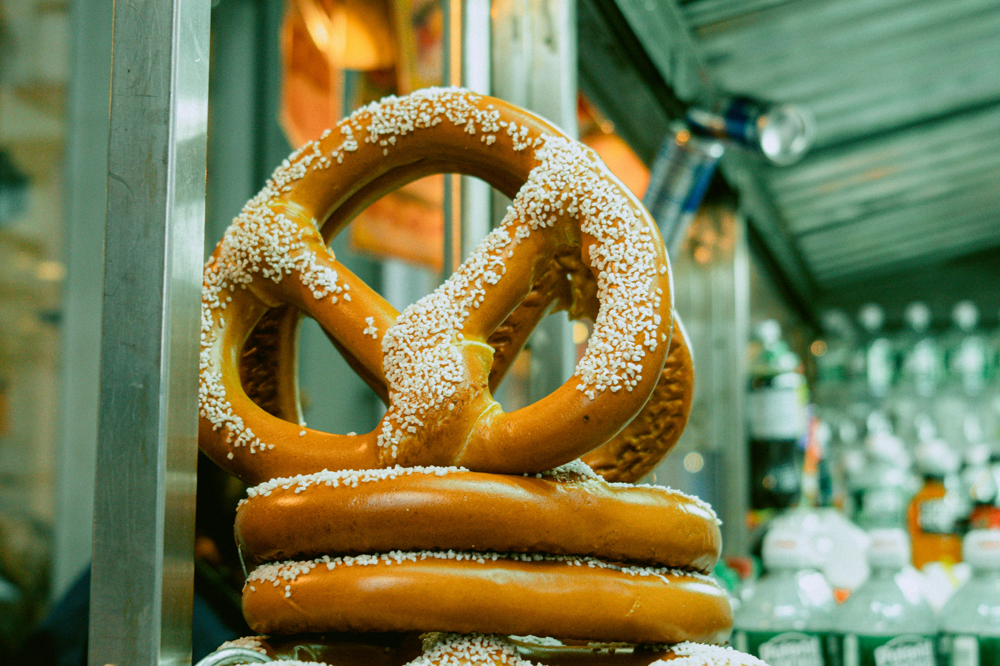

Michael's "The Works" Pretzel
It's Pretzel Day!

Description
Once a year the office park brings in a pretzel cart. It's a really big deal.
Now we bring these soft, fluffy pretzels that consume your mind right to your kitchen. Bon appetit!
Ingredients
- 2 cups whole milk
- 2 packets active dry yeast
- 3 1/4 cups all-purpose flour
- 1 cup bread flour
- 6 tbs light brown sugar
- 2 tsp salt
- 4 tbs cooled melted butter
- 4 cups hot water
- 1/2 cup baking soda
- 18 different toppings:
- Sweet glaze
- Cinnamon sugar
- Chocolate
- White chocolate
- Fudge
- M&M's
- Caramel dip
- Mint chip
- Chocolate chip
- Marshmallow
- Nuts
- Toffee nuts
- Coconuts
- Peanut butter drizzle
- Oreos
- Sprinkles
- Cotton candy bits
- Powdered sugar
Steps
- Heat whole milk to 110˚F and add dry yeast. Let sit for 5 min or until frothy.
- Put in stand mixer bowl and add brown sugar, flour, bread flour, salt, and melted butter.
- Knead for 10 min. If sticky, add a few tbs of flour at a time until it pulls away from sides of bowl.
- Let dough rise for 1 hour in well-oiled, covered bowl inside a warm place.
- Unwrap dough, divide into 12 equal piece and roll out until 3 feet wide.
- Twist the dough around 3 times and fold it over itself, forming a pretzel. Dip into solution of hot water and baking soda.
- Place in 450˚F oven for about 12 min, turning halfway through.
- Prepare all toppings. Add all toppings to the pretzel for the "works".
Adapted from recipe by Babish Culinary Universe.
Back to Directory